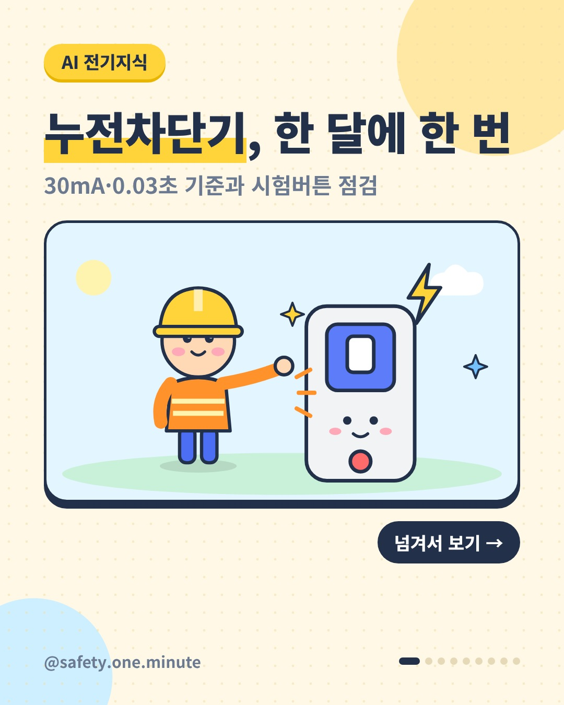
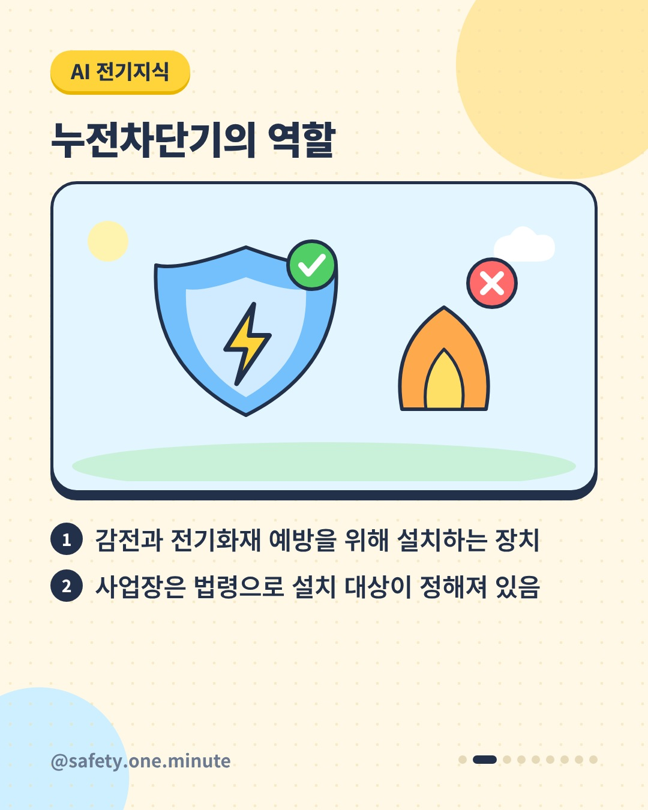
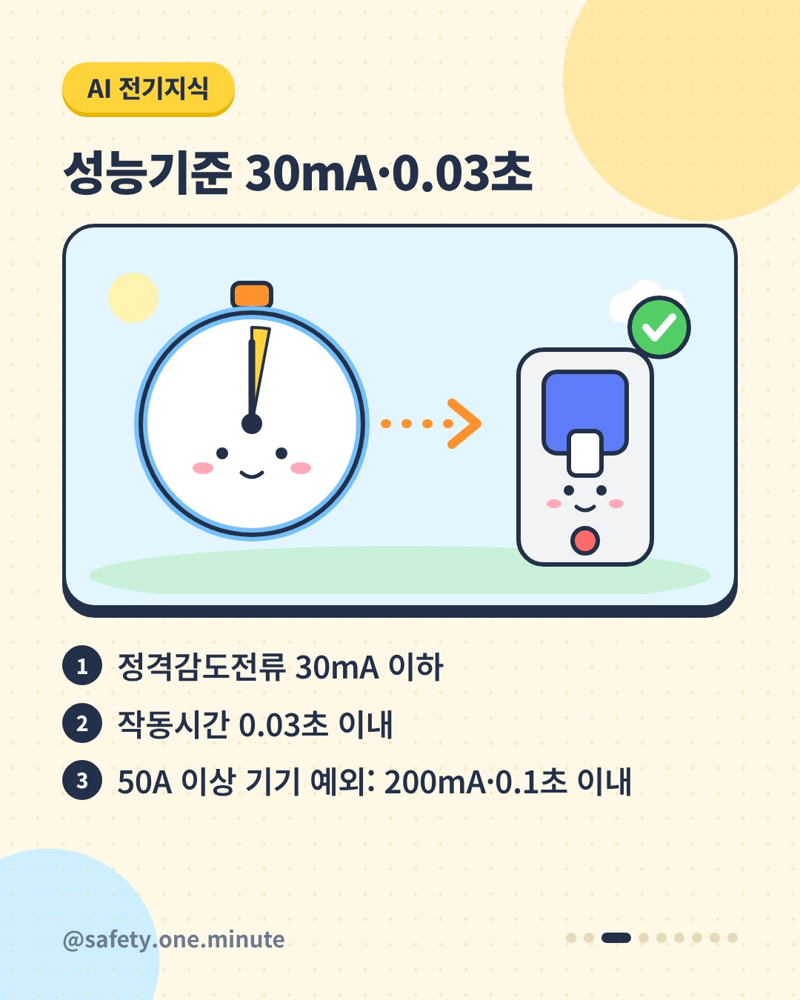
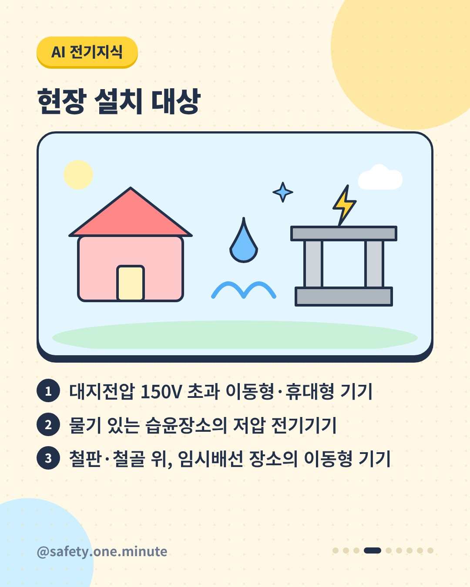
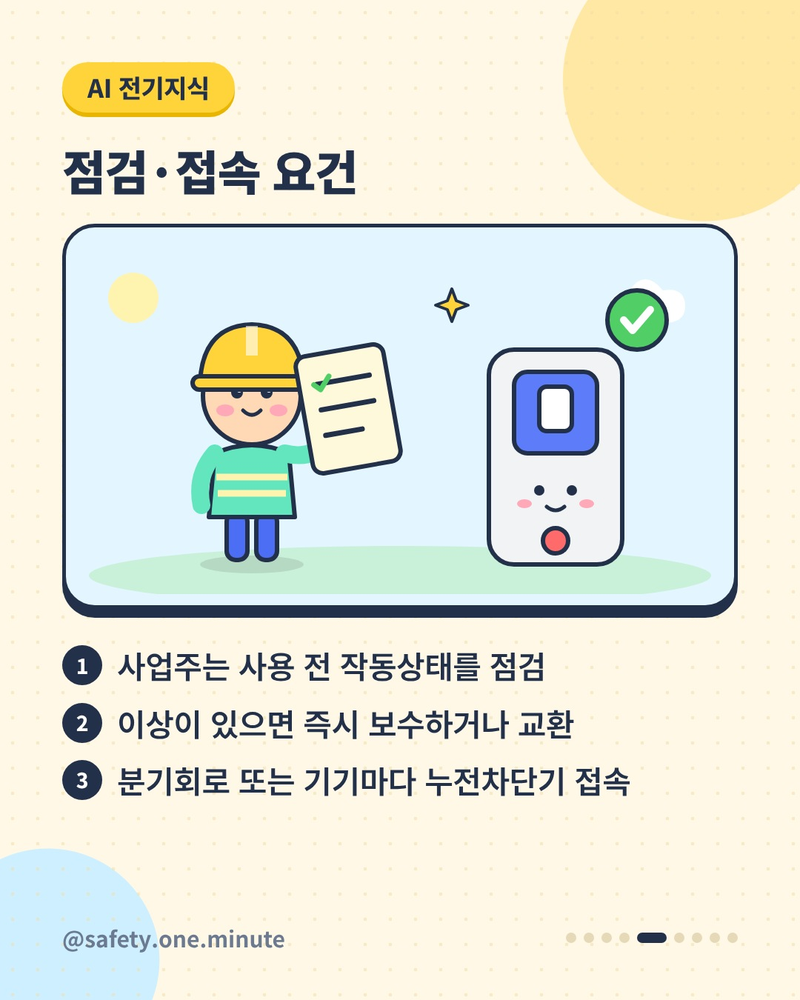
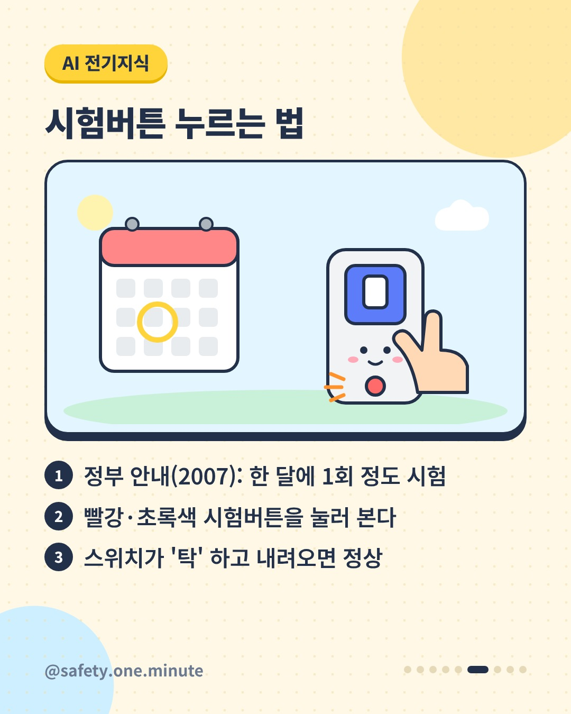
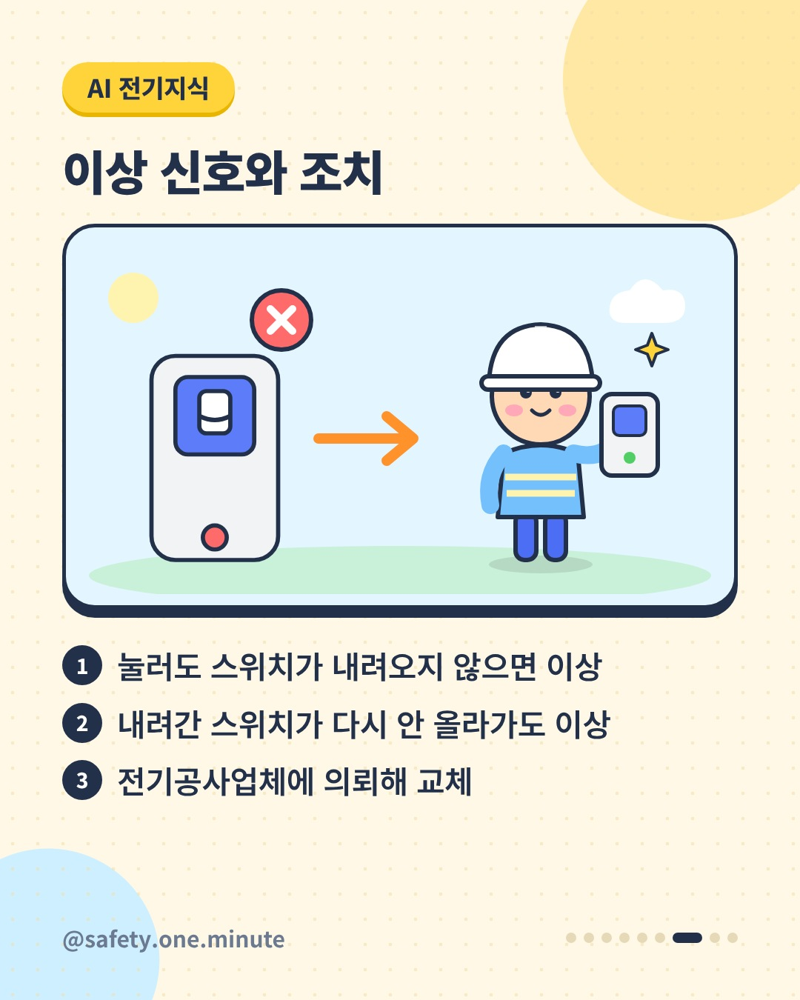
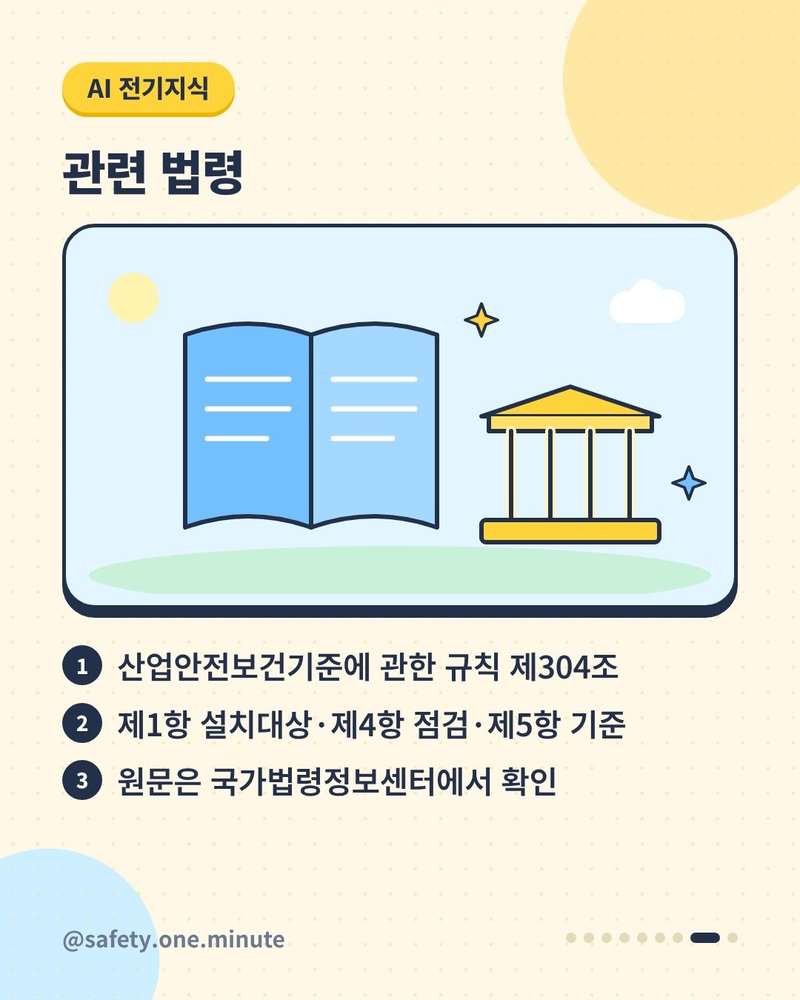
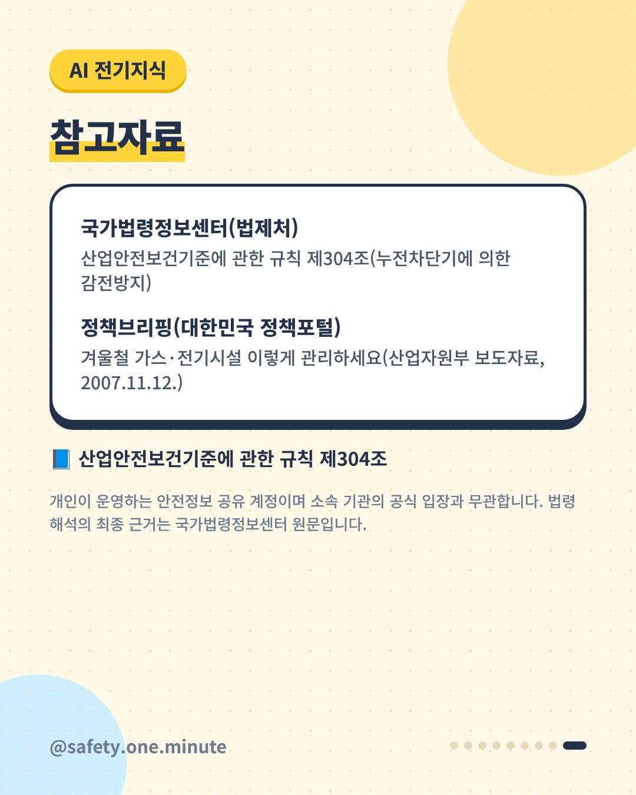

누전차단기, 한 달에 한 번 — 9장 (4:5)









캡션
누전차단기, 마지막으로 시험해 본 게 언제인가요? 누전차단기는 감전과 전기화재를 예방하기 위해 설치하는 장치입니다. 산업안전보건기준에 관한 규칙 제304조는 사업장에서 대지전압 150V 초과 이동형·휴대형 기기, 습윤장소의 저압 기기, 철판·철골 위 등 도전성이 높은 장소나 임시배선 장소에서 쓰는 이동형·휴대형 기기에 감전방지용 누전차단기를 설치하도록 하고 있습니다. 성능기준은 정격감도전류 30mA 이하, 작동시간 0.03초 이내입니다. 정격전부하전류가 50A 이상인 기기는 오작동 방지를 위해 200mA 이하, 0.1초 이내로 할 수 있습니다. 또한 분기회로 또는 기기마다 누전차단기를 접속하고, 사용 전에 작동상태를 점검하고, 이상이 있으면 즉시 보수하거나 교환해야 합니다. 2007년 정부 보도자료에서는 누전차단기를 한 달에 1회 정도 시험하도록 권하고 있습니다. 빨강(초록)색 시험버튼을 눌러 스위치가 '탁' 내려오면 정상이고, 내려오지 않거나 내려간 스위치가 다시 올라가지 않으면 전기공사업체에 의뢰해 교체하세요. 시험버튼을 누르면 해당 회로의 전기가 끊기니 참고하세요. ※ 적용 제외 대상(이중절연 기기 등)과 세부 요건은 법령 원문을 확인하세요. 출처: - 국가법령정보센터(법제처) – 산업안전보건기준에 관한 규칙 제304조 - 정책브리핑 – 산업자원부 보도자료 「겨울철 가스·전기시설 이렇게 관리하세요」(2007) 개인이 운영하는 안전정보 공유 계정이며 소속 기관의 공식 입장과 무관합니다. 법령 해석의 최종 근거는 국가법령정보센터 원문입니다. #누전차단기 #감전예방 #전기안전 #전기화재예방 #산업안전보건기준에관한규칙 #산업안전 #전기기초 #전기지식 #시험버튼 #정격감도전류 #ELB #안전점검 #안전수칙 #현장안전